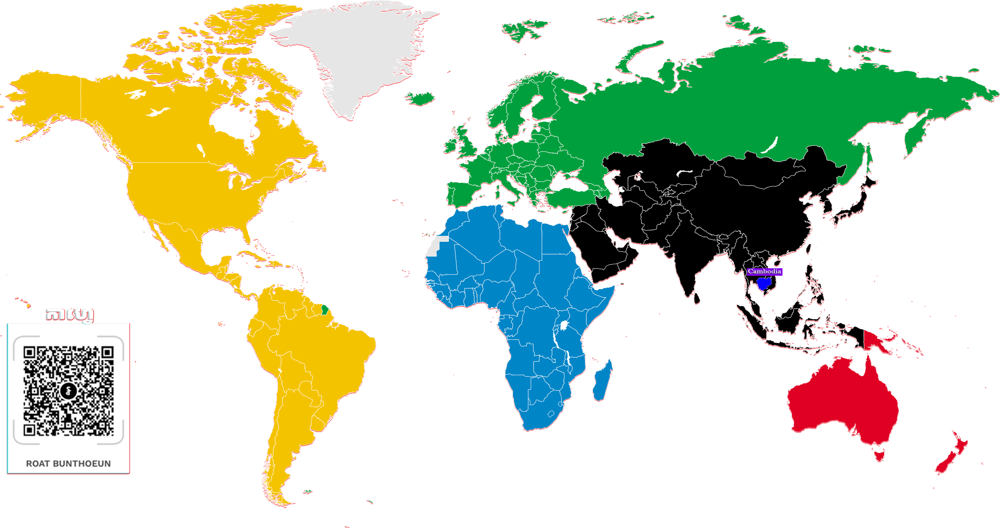
ផែនទីបង្ហាញសណ្ឋានដី ក្នុងកម្មវិធី AcGIS Pro
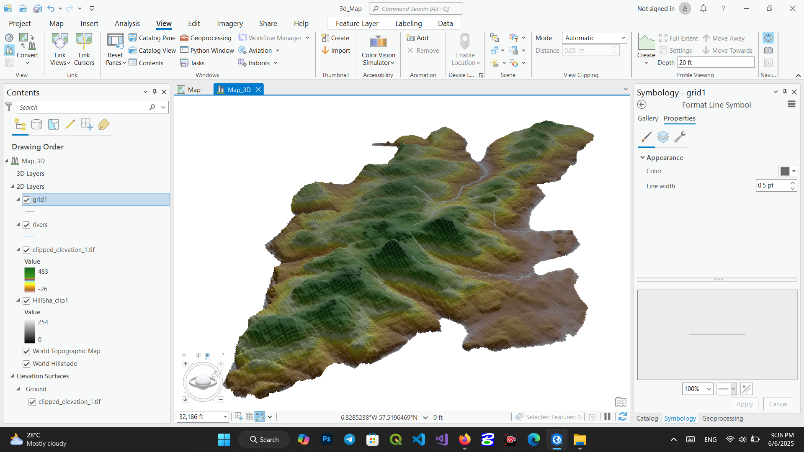
ស្វែងយល់ពីបច្ចេកវិទ្យាទំនើបក្នុងការធ្វើផែនទីផ្សេងៗ ដែលមានគុណភាពខ្ពស់ក្នុងឆ្នាំ២០២៥នេះ
អានពេញ...របៀបកំណត់ក្រឡាផ្ទៃនៅលើខេត្តក្នុងមាត្រដ្ឋាន ១:១០០.០០០

ផែនទី ខ្នាតមាត្រដ្ឋាន 1:250.000 || Map 1:250.000
មើលវីដេអូពេញ...ផែនទី ខ្នាតមាត្រដ្ឋាន 1:250.000 || Map 1:250.000

ផែនទី ខ្នាតមាត្រដ្ឋាន 1:250.000 || Map 1:250.000
មើលវីដេអូពេញ...ការធ្វើផែនទីបង្ហាញពីសណ្ឋានដី
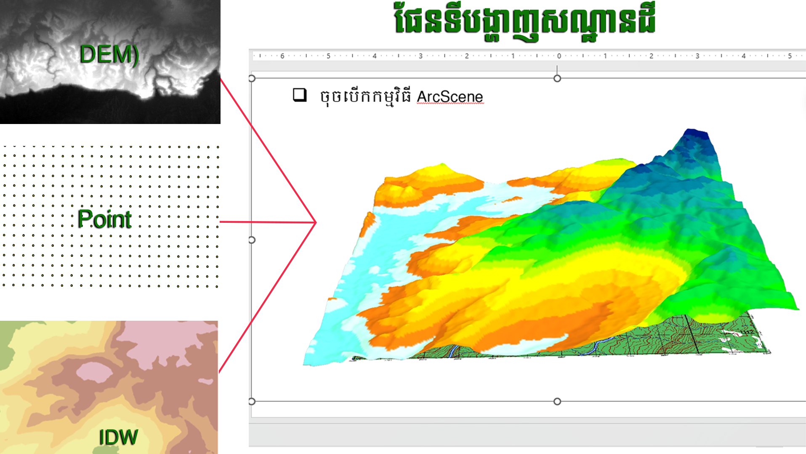
ស្វែងយល់ពីបច្ចេកវិទ្យាទំនើបក្នុងការធ្វើផែនទីផ្សេងៗ ដែលមានគុណភាពខ្ពស់ក្នុងឆ្នាំ២០២៥នេះ
អានពេញ...ការកាត់ផែនទីរូបភាព និងវ៉ិចទ័រក្នុងកម្មវិធី ArcMap 10.4.1

ស្វែងយល់ពីបច្ចេកវិទ្យាទំនើបក្នុងការធ្វើផែនទីផ្សេងៗ ដែលមានគុណភាពខ្ពស់ក្នុងឆ្នាំ២០២៥នេះ
អានពេញ...របៀបកំណត់ឱ្យត្រូវចំណុចយាមកាក្នុងកម្មវិធី ArcMap || Georeferencing in ArcMap
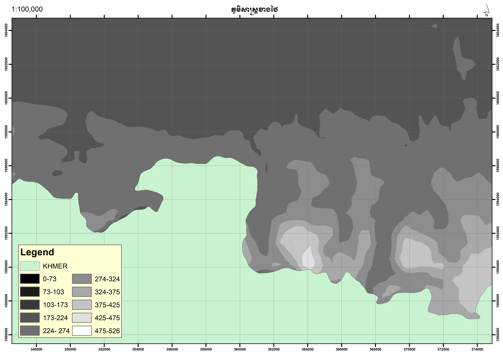
វីដេអូនេះនឹងបង្ហាញលម្អិតអំពីរបៀបកំណត់ឱ្យត្រូវចំណុចយាមកាក្នុងកម្មវិធី ArcMap || Georeferencing in ArcMap
មើលវីដេអូពេញ...បច្ចេកវិទ្យាក្នុងការទាញយកចំណុចនិយាមការចេញពីទូរស័ព្ទ (Measure Map)
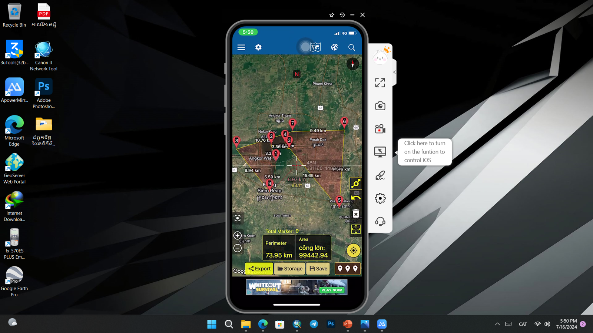
ស្វែងយល់ពីបច្ចេកវិទ្យាទំនើបក្នុងការធ្វើផែនទីផ្សេងៗ ដែលមានគុណភាពខ្ពស់ក្នុងឆ្នាំ២០២៥នេះ
អានពេញ...របៀបតម្លើងកម្មវិធី ArcGIS 10.4.1 || How to install ArcGIS 10.4.1

របៀបតម្លើងកម្មវិធី ArcGIS 10.4.1 || How to install ArcGIS 10.4.1
មើលវីដេអូពេញ...ការកាត់ផែនទីវ៉ិចទ័រ និងវ៉ិចទ័រក្នុងកម្មវិធី ArcMap 10.4.1
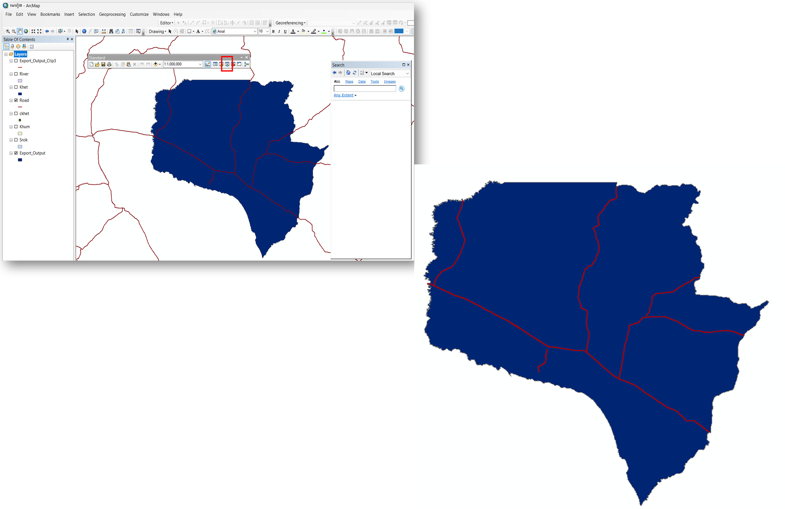
ស្វែងយល់ពីបច្ចេកវិទ្យាទំនើបក្នុងការធ្វើផែនទីផ្សេងៗ ដែលមានគុណភាពខ្ពស់ក្នុងឆ្នាំ២០២៥នេះ
អានពេញ...របៀបបញ្ចូលផែនទី || How to add map in to ArcMap
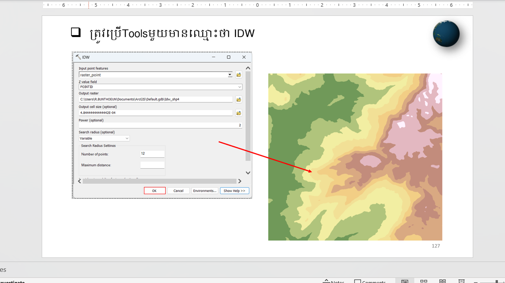
របៀបបញ្ចូលផែនទី || How to add map in to ArcMap
មើលវីដេអូពេញ...ផែនទីឋានលេខា ១:៣០០.០០០
ស្វែងយល់ពីបច្ចេកវិទ្យាទំនើបក្នុងការធ្វើផែនទីផ្សេងៗ ដែលមានគុណភាពខ្ពស់ក្នុងឆ្នាំ២០២៥នេះ
អានពេញ...របៀបបញ្ចូល Files...ពីComputerទៅ iPhone និងពីIPhone ទៅ Computer ដោយមិនចាំបាច់ដោតឌុយ
របៀបបញ្ចូល Files...ពីComputerទៅ iPhone និងពីIPhone ទៅ Computer ដោយមិនចាំបាច់ដោតឌុយ
មើលវីដេអូពេញ...ផែនទីឋានលេខា ១:៥០០.០០០
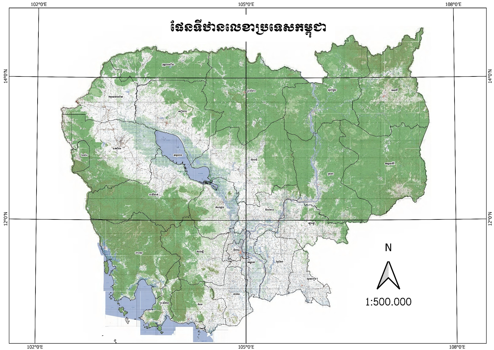
ស្វែងយល់ពីបច្ចេកវិទ្យាទំនើបក្នុងការធ្វើផែនទីផ្សេងៗ ដែលមានគុណភាពខ្ពស់ក្នុងឆ្នាំ២០២៥នេះ
អានពេញ...ទស្សនាទេសភាពផែនទីអំពីទីតាំងស្រុកព្រៃកប្បាសខេត្តកែវ(Prey Kabas district Takeo province)
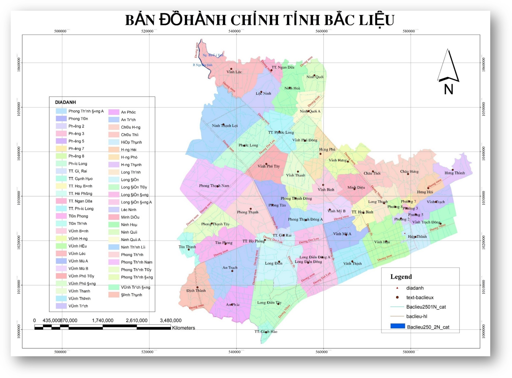
ទស្សនាទេសភាពផែនទីអំពីទីតាំងស្រុកព្រៃកប្បាសខេត្តកែវ(Prey Kabas district Takeo province)
មើលវីដេអូពេញ...ប្លង់ការពារសុវត្ថិភាពជួនដល់ថ្នាក់ដឹកនាំ

ស្វែងយល់ពីបច្ចេកវិទ្យាទំនើបក្នុងការធ្វើផែនទីផ្សេងៗ ដែលមានគុណភាពខ្ពស់ក្នុងឆ្នាំ២០២៥នេះ
អានពេញ...ផែនទីឋានលេខា ១:៣០០.០០០
ស្វែងយល់ពីបច្ចេកវិទ្យាទំនើបក្នុងការធ្វើផែនទីផ្សេងៗ ដែលមានគុណភាពខ្ពស់ក្នុងឆ្នាំ២០២៥នេះ
អានពេញ...ផែនទីឋានលេខា ១:៥០០.០០០
ស្វែងយល់ពីបច្ចេកវិទ្យាទំនើបក្នុងការធ្វើផែនទីផ្សេងៗ ដែលមានគុណភាពខ្ពស់ក្នុងឆ្នាំ២០២៥នេះ
អានពេញ...បច្ចេកវិទ្យាក្នុងការទាញយកចំណុចនិយាមការចេញពីទូរស័ព្ទ (Measure Map)
ស្វែងយល់ពីបច្ចេកវិទ្យាទំនើបក្នុងការធ្វើផែនទីផ្សេងៗ ដែលមានគុណភាពខ្ពស់ក្នុងឆ្នាំ២០២៥នេះ
អានពេញ...ការកាត់ផែនទីវ៉ិចទ័រ និងវ៉ិចទ័រក្នុងកម្មវិធី ArcMap 10.4.1
ស្វែងយល់ពីបច្ចេកវិទ្យាទំនើបក្នុងការធ្វើផែនទីផ្សេងៗ ដែលមានគុណភាពខ្ពស់ក្នុងឆ្នាំ២០២៥នេះ
អានពេញ...ប្លង់ការពារសុវត្ថិភាពជួនដល់ថ្នាក់ដឹកនាំ
ស្វែងយល់ពីបច្ចេកវិទ្យាទំនើបក្នុងការធ្វើផែនទីផ្សេងៗ ដែលមានគុណភាពខ្ពស់ក្នុងឆ្នាំ២០២៥នេះ
អានពេញ...Gallery
រូបភាពទី0៖ មិត្តរួមជំនាន់ BTV9
រូបភាពទី១៖ ផែនទីឋានលេខា
រូបភាពទី២៖ បង្រៀនដល់កងរាជអាវុធហត្ថ
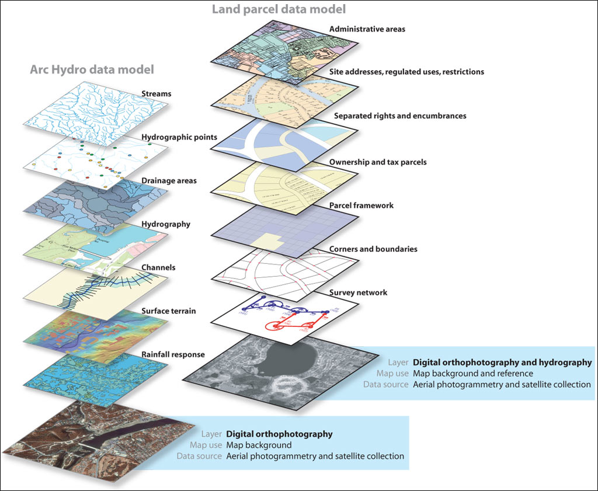
រូបភាពទី៣៖ ធាតុផ្សំនៃផែនទី

រូបភាពទី៤៖ Download ពី Google Earth Pro
រូបភាពទី៥៖ ប្រើ Tools IDW
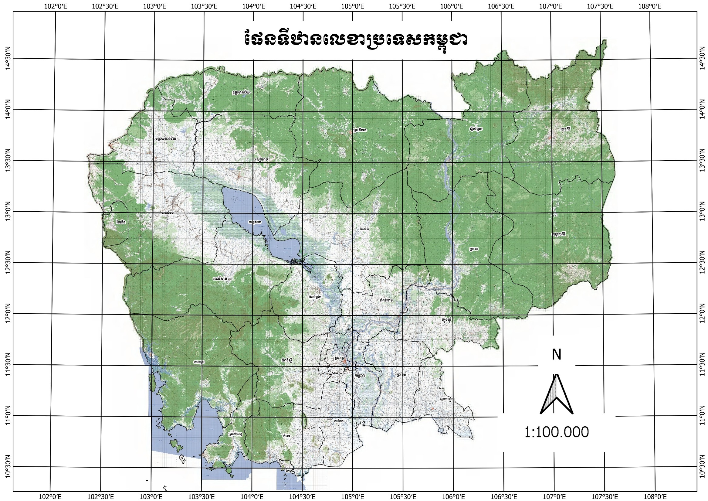
រូបភាពទី៦៖ ផែនទីឋានលេខា ១:១០០.០០០
រូបភាពទី៧៖ ផែនទីឋានលេខា ១:៣០០.០០០
រូបភាពទី៨៖ ផែនទីឋានលេខា ១:៥០០.០០០
រូបភាពទី៩៖ ប្លង់ការពារសុវត្ថិភាពជួនដល់ថ្នាក់ដឹកនាំ
រូបភាពទី១០៖ ផែនទីឋានលេខា ១:២៥០.០០០
រូបភាពទី១១៖ ផែនទីឋានលេខានៅវៀតណាម
រូបភាពទី១២៖ ប្រើប្រាស់ Tools IDW
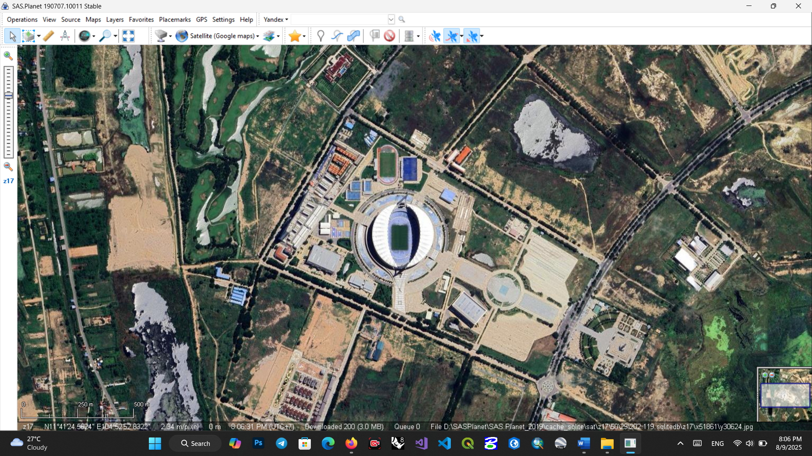
រូបភាពទី១៣៖ រូបភាពកម្មវិធី SAS.Planet 2019
រូបភាពទី១៤៖ រូប..សណ្ឋានដីក្នុងកម្មវិធី AcGIS Pro
រូបភាពទី១៥៖ ប្លង់ការពារសុវត្ថិភាពជួនដល់ថ្នាក់ដឹកនាំ
រូបភាពទី១៦៖ ផែនទីឋានលេខា ១:២៥០.០០០
រូបភាពទី១៧៖ ផែនទីឋានលេខានៅវៀតណាម
រូបភាពទី១៨៖ ប្រើប្រាស់ Tools IDW
រូបភាពទី១៧៖ ផែនទីឋានលេខានៅវៀតណាម
រូបភាពទី១៨៖ ប្រើប្រាស់ Tools IDW
File and Software
ការកាត់ផែនទីនៅក្នុង ArcGIS
ប្រភេទឯកសារ: PowerPoint
ការតម្លើងកម្មវិធី ArcGIS
ប្រភេទឯកសារ: PDF
ការកំណត់ Coordinate System
ប្រភេទឯកសារ: Word
ការតម្លើងកម្មវិធី ArcGIS
ប្រភេទឯកសារ: PDF
បទបង្ហាញ៖ ការបង្កើត File ទិន្នន័យភូមិសាស្ត្រ
ប្រភេទឯកសារ: PowerPoint
ការកំណត់ Coordinate System
ប្រភេទឯកសារ: Word
ការតម្លើងកម្មវិធី ArcGIS
ប្រភេទឯកសារ: PDF
បទបង្ហាញ៖ ការបង្កើត File ទិន្នន័យភូមិសាស្ត្រ
ប្រភេទឯកសារ: PowerPoint
ការកំណត់ Coordinate System
ប្រភេទឯកសារ: Word
ការតម្លើងកម្មវិធី ArcGIS
ប្រភេទឯកសារ: PDF
ការកំណត់ Coordinate System
ប្រភេទឯកសារ: Word
បទបង្ហាញ៖ ការបង្កើត File ទិន្នន័យភូមិសាស្ត្រ
ប្រភេទឯកសារ: PowerPoint
ការកំណត់ Coordinate System
ប្រភេទឯកសារ: Word
ការតម្លើងកម្មវិធី ArcGIS
ប្រភេទឯកសារ: PDF
បទបង្ហាញ៖ ការបង្កើត File ទិន្នន័យភូមិសាស្ត្រ
ប្រភេទឯកសារ: PowerPoint
បទបង្ហាញ៖ ការបង្កើត File ទិន្នន័យភូមិសាស្ត្រ
ប្រភេទឯកសារ: PowerPoint
ការកំណត់ Coordinate System
ប្រភេទឯកសារ: Word
ការកំណត់ Coordinate System
ប្រភេទឯកសារ: Word
ព័ត៌មានទំនាក់ទំនង
អ៊ីមែល: bunthoeunroat@gmail.com
លេខទូរស័ព្ទ: 096 976 2168
អាសយដ្ឋាន: Phnom Penh, Cambodia
រ័ត្ន ប៊ុនធឿន
ការអប់រំ និងបទពិសោធន៍ការងារ
ចុះបេសកកម្មតាមព្រំដែន កម្ពុជា-ថៃ | 2025 - បច្ចុប្បន្ន
- នាយកដ្ឋានភូមិសាស្រ្ត ក្រសួងការពារជាតិ | 2022 - 2025
- សាកលវិទ្យាល័យបណ្ឌិតយោធាទីក្រុងហាណូយ | 2016 - 2022
- សាកលវិទ្យាល័យភូមិន្ទភ្នំពេញ | 2012 - 2016
- វិទ្យាល័យភ្ញីមាស | 2010 - 2012
សញ្ញាបត្រវិទ្យាសាស្រ្តកំុព្យូទ័រ
សាកលវិទ្យាល័យបណ្ឌិតយោធាទីក្រុងហាណូយ(IT) | 2016 - 2022
ជំនាញបច្ចេកទេស
ArcGIS
ArcGIS Pro
Erdas
GeoSerVer
VisualCode
គណិតវិទ្យាកំរិតខ្ពស់
Ustation
Tichnogy...